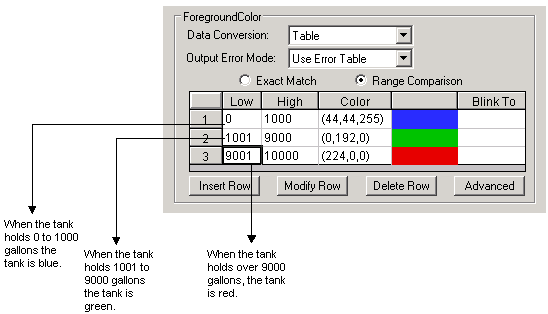
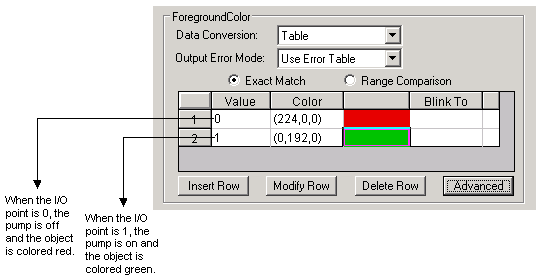

Animating properties using color
Applying color to your objects is a visually effective method of using animations in your process environment. One example would be changing the foreground, edge, or background color of objects to give your operators visual cues about the process values or alarm conditions. Keep in mind that too many colors or too frequent of a change in colors on one graphic reduces the overall effect and changes tend to be ignored over time.
If using one of the Theme color sets, be sure that you use that same color set for every object on the picture as well as the picture's overall background and any animations. Keeping to the same themed color set creates an overall palette of colors that works well together.
When animating the color of an object, you must define a color threshold. A color threshold is either a color and value combination or a color and alarm combination. You can define the following types of color thresholds:
Color by analog value
Color by digital value
Color by current alarm
Color by latched alarm
For each type of threshold, specify one or more rows in a lookup table. When coloring by analog value, each row in the lookup table defines a color and either a single value or a range of values that you want to associate with the color. When coloring by alarm, each row defines the color and the associated alarm.
Any time a data source changes, DeltaV Operate refreshes the color tables. To avoid problems when modifying a color table, be certain that all your changes are correct.
The following sections show you how to define color thresholds for the types of thresholds introduced above, using the Advanced Animations dialog. Refer to Specifying Data Conversions in the topic Defining Data Sources for information on how to use lookup tables.
Color by Analog Value
When you color objects by their analog value, you enter a key value or a range of key values and assign them to a color. When the data source value falls within the threshold, the object changes to that color.
For example, let's say a factory controls a tank of water for cleaning and manufacturing purposes. When the water in the tank falls below 1000 gallons, the pumps from the main water supply turn on and refill the tank. When the water in the tank rises above 9000 gallons, the pumps shut off. The thresholds for this tank are shown in the following figure.

When operators see the tank change color, they can also determine whether the pumps have turned on (blue) or off (red). To color an object by analog value, select the Range Comparison option button on the Advanced Animations dialog and edit the minimum and maximum values of the lookup table as desired.
Color by Digital Value
Color thresholds can be useful with digital values, too. Suppose you assign the following thresholds to an object that monitors the status of a pump. The data source for this object is a digital I/O point in an OPC server.

When the value is not in the table, the object is colored black.
Using digital values lets you define thresholds based on an exact match and a tolerance. When you specify an exact match, you declare that you only want to change an object's color when the data source exactly matches the threshold value you have assigned to that color, plus or minus a specified tolerance (the allowable deviation from that value). Tolerances only apply to table conversions where the configuration is set to exact match.
How the output data is displayed depends on how you classify error handling in the Animations dialog box. For more information, refer to Classifying Animations Errors in the topic Defining Data Sources.
To color an object by digital value, select the Exact Match option button on the Advanced Animations dialog and assign digital values to the colors you want to use. If desired, enter a tolerance value in the Advanced Lookup Options dialog. The default tolerance is 0. If you are using VBA, set the Tolerance property of the Lookup object.
Color by Current Alarm
Depending on your data source, an animated object can receive a variety of alarms. You can set up thresholds to visually alert an operator that a data source is in a particular alarm state. By using color by current alarm, the object always displays the color assigned to the current alarm.
When the data source is a DeltaV Operate process database, tag alarms can also provide data on more than just control limits. For example, suppose that the speed at which the tank fills is crucial to the process. To effectively monitor this condition, you could set up another threshold using the Rate of Change alarm state.
To color by current alarm, set the data source path to the alarm and use the CUALM field. For example, browse to DVSYS.MODULE-XYZ/HI_ALM.CUALM.
Color by Latched Alarm
When a data source is in more than one alarm state that has defined thresholds, the latched alarm strategy displays the color assigned to the unacknowledged alarm of the highest priority.
To color by latched alarm, set the data source path to the alarm and use the LAALM field. For example, browse to DVSYS.MODULE-XYZ/HI_ALM.LAALM.
Using Blinking Thresholds
In addition to a color threshold, you can define a blinking threshold for current and digital values. The blinking threshold replaces the object's foreground, background, or edge color when the assigned value is reached or the assigned alarm occurs. The color of the object blinks between the threshold color and the background color.
To assign a blinking threshold using the Advanced Animations dialog, double-click the Blink To cell in the row of a value and select the color you want to assign to the threshold. Select the Toggle option button and enter the output value (color) of the blinking threshold in the field.
Blinking on a New Alarm
You can also set a selected object to blink every time the data source registers a new alarm. The object stops blinking when the alarm is acknowledged. This setting overrides the blinking settings defined for individual thresholds. To blink on a new alarm, set the data source path to the alarm and use the NALM field. For example, browse to DVSYS.MODULE-XYZ/HI_ALM.NALM.
Using Shared Thresholds
If a lookup object is shared (in either a global data source or in another picture), you can use its color table to define a threshold.
On the Advanced Animations dialog, click the Advanced button and use the Advanced Lookup Options dialog to browse to a data source for the shared color table.